．作者任教於香港科技大學數學系
•對外搜尋關鍵字
|
．作者任教於香港科技大學數學系 •對外搜尋關鍵字 |
|
在討論立體幾何的作圖題之前，讓我們先分析一下它和平面幾何的作圖題在實踐上的基本差別：
【基本作圖題 4.1】：過直線
作法：在 用平面幾何基本作圖分別作 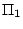 和 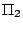 中過 M 點而且和 【基本作圖題 4.2】：過平面 Π 上一點 P，作其垂線。
作法：在 Π 上任取一條過 P 點的直線 【基本作圖題 4.3】：設 P 是平面 Π 之外的給定點。求作過 P 點而且垂直于 Π 的直線。
作法：先在 Π 上任取一點 Q。用[基本作圖 4.2]作和 Π 正交于
Q 的直線
在平面幾何中，一個角區的邊界由兩條共頂點的半線（亦即射線）所組成。相類似地，空間的一個兩面角區的邊界是由兩個共頂棱的半平面所組成（參看 [圖 4-10]）。
[ 圖 4-10 ]
【引理 4.3】：如 [圖 4-10] 所示，設 A, 是 則有 。
証明：如 [圖 4-10] 所示，在射線 , ,
,
上分別取 B, C, ,
使得
,
。由所作易見
【兩面角的定義】：
的大小定義為
，因為後者是和
【基本作圖題 4.4】：設
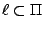,
是以平面 Π 為邊界的半空間， 是 Π 中以
作法：在 【引理 4.4】：設 , ，則 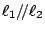。
証明：令
,
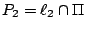。若
P1=P2，則 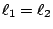。若 ，令
,
[ 圖 4-11 ]
【習題】：
|
對于空間中一個給定平面 Π，每個點 P 有一個唯一的對稱點 P'
。若 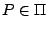 則其對稱點 P' 就是 P 本身。若 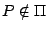，則
[ 圖 4-13 ]
【定義】：上述空間中 這個變換 (transformation)
叫做空間對于給定平面 Π 的反射對稱，將以符號
記之，亦即
顯然有 恆成立，亦即 乃是空間的恆等變換。
【定理 4.4】：
是空間的一個保長變換，亦即直線段
証明：在此我們採用簡約符號 P' 表示 ，而且把証明分為下述四種情形：
[註]：保長變換的組合當然還是保長變換。現在讓我們來分析一下，
對于兩個（相異的）平面 , 的反射對稱的組合
究竟是一種怎樣的保長變換。為此，我們將採用簡約符號
下面將分成
情況一：
令 所以 我們把上述分析之所得敘述為[定理 4.5]：
【定理 4.5】：設
[這種保長變換叫做平移 (translation)。]
[ 圖 4-14 ]
情況二：
令 是過 P 點而且和 則有下述 中定向角的關係式，即如 [圖 4-15] 所示
[ 圖 4-15 ]
所以
上述分析已經証得下述定理，即
【定理 4.6】：設
[這種保長變換叫做空間繞 垂直投影 (orthogonal projection)：
對于空間中一個給定平面 Π，過每一點 P 可作唯一一條直線 【定義】：空間對于一個給定平面 Π 的垂直投影把 P 點映射到 。由此可見，它把每條垂直于 Π 的直線上的所有點都映射到該直線和 Π 的交點，將以符號 記之。
[ 圖 4-16 ]
【定義】：空間對于一個給定直線
[ 圖 4-17 ]
【定理 4.7】： 以簡約符號 P' 表示
。設 ，則有
而且
証明：令 , 。由所設 由此可見 （整個 在 下的象點點集）。
[ 圖 4-18 ]
再者，如 [圖 4-18] 所示和平面幾何中的相似三角形定理，即得
【推論】：若 是一個平行四邊形而且 A', B', C', D' 不共線，則 也是一個平行四邊形（見 [圖 4-16]）。
証明：由所設
【定理 4.8】：以簡約符號 P* 表示
。
設 , ，則同樣地也有
証明：過 P 點作
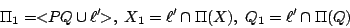
則易見 而同樣的圖形和相似三角形定理即得 【定理 4.9】：設 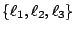 是共交于一點 O 而且兩兩正交的三條直線。若以簡約符號 Pi 表示 [這也就是勾股定理在空間幾何中的表達式]
証明：令 Π 是過 P 點和 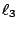 正交的平面，
[ 圖 4-19 ]
所以由勾股定理即有
再者，由所作易見
所以即已証得 【習題】： 光的反射定律：一個平滑的鏡面可以想成是一個平面的局部。遠在古希臘時代，即已認識到下述光的反射定律：
「入射線、反射線和平面在反射點的法線三線共面，而且兩者和法線的夾角相等。」
[ 圖 4-20 ]
設 T 是空間的一個保長變換（例如是好些個反射對稱的組合），並且用簡約符號 記號 T(P)。
|
|
|
|
|
（若有指正、疑問……，可以在此 留言 或 寫信 給我們。） |
|
|
|
EpisteMath (c) 2000 中央研究院數學所、台大數學系 各網頁文章內容之著作權為原著作人所有 |
| 最後修改日期：6/19/2004 |